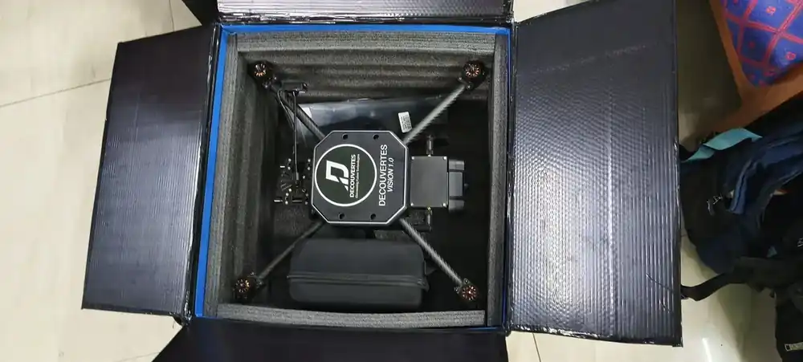

Home / Problems We Solve / Drone too bulky to carry
SecurityPortable drones for small teams: light enough to take along
A drone left in the vehicle is no use. Small teams need one they can carry and launch quickly.
Small patrols, security teams and field units that move on foot.
The drone stays in the vehicle, so the team goes without it when it matters.
A light or foldable drone that one person can carry and launch quickly.
What is the best portable drone for a small team?
The best drone is the one in the air when it is needed. If it takes a vehicle, a crew and a long set-up, small teams will often go without it.
It depends on how far you need to see. For a quick look over a wall or ridge, a nano drone is hard to beat. For longer reach and a better camera, a foldable quadcopter is the better fit.
Weigh the whole kit, not just the aircraft: batteries, controller and spares all go in the same bag.
Who faces this problem
Small patrols
A quick look ahead can matter when a team moves on foot.
Security teams
Fast launches suit short-notice checks around a site.
Field inspection teams
Remote sites are easier to reach when the kit fits in one bag.
Signs you have this problem
- Your drone often stays in the vehicle
- Set-up takes too long for the job
- Launching needs more people than you have
- Teams move on foot, away from vehicles
What to look for
- Total kit weight, including batteries
- Folding arms or a very small airframe
- Fast single-person launch
- Enough range and flight time to return safely
The main causes
Size
Fixed-arm drones need large cases and vehicle space.
Crew
Some systems need several people to set up.
Set-up time
A long set-up can miss the moment.
Before and after
How to solve it, step by step
- 1
Define
How far must the team carry it, and how far must it see?
- 2
Choose
Pick nano for a quick look, or foldable for more reach.
- 3
Pack
Plan batteries and spares for the mission.
- 4
Practise
Drill launch and recovery until they are quick.
Common mistakes
- Weighing only the aircraft instead of the whole kit
- Choosing the smallest drone when the task needs more range
- Packing too few batteries for a day in the field
- Never practising launch and recovery under time pressure
Questions to ask a supplier
- What does the complete kit weigh, with batteries and controller?
- How long does it take one person to launch from the bag?
- What flight time can we expect in wind and heat?
- How does it perform at the distance we need to see?
What to use
Common questions
How light is the Vision Nano?
Vision Nano weighs 250 g, with a 20 MP camera, 5 km range and 25 minutes of flight time.
Does Vision 2.0 fold?
Yes. It is a foldable quadcopter with a 4.0 kg MTOW, a 500 g payload and a 25 km range.
Nano or foldable: which should I choose?
Choose nano for close-range looks by one person. Choose foldable when you need more range and payload.
How much do small drones weigh?
It varies widely. Our Vision Nano weighs 250 g. Vision 2.0 is a foldable quadcopter with a 4.0 kg MTOW, for missions that need more range and payload.
What matters most in a drone for small teams?
How quickly one person can get it flying, and whether it can see far enough for the task. Total weight, flight time and spare batteries come next.
Related problems
Monitoring large crowds
At large events, ground cameras and officers can’t see how the whole crowd is moving.
Read this guideOne drone isn’t enough
Some jobs are too large or too risky for one aircraft, and many separate pilots are hard to coordinate.
Read this guideWorried about drone data security
Drone video and flight logs can reveal sensitive sites and routines, so where they go matters.
Read this guideFacing this problem?
Tell us about your mission and our engineers will suggest the right platform or configuration.